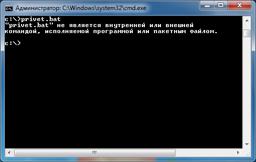
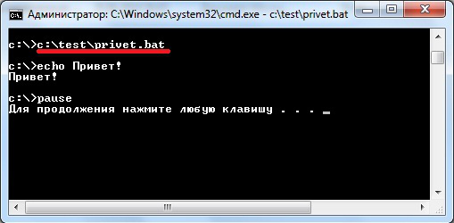
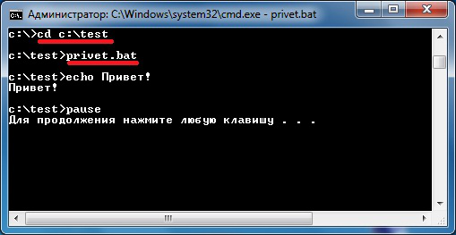
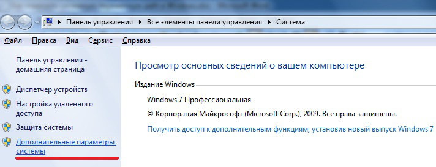
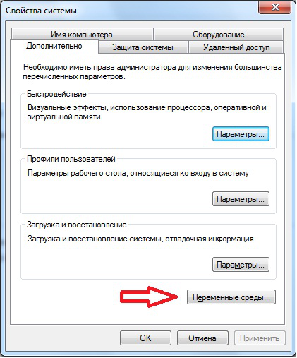
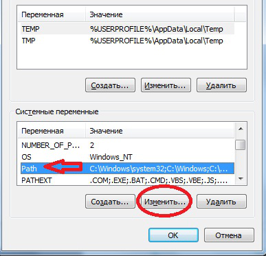
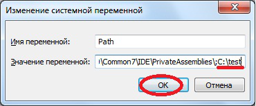
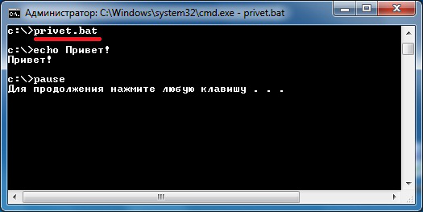

Как изменить системную переменную path в Windows 7
27.08.2014 16:54 | Просмотров:15107 |
Те, кто хоть раз пользовался, утилитами командной строки знают, что намного удобней набирать команду сразу, не используя при этом путь к этой утилите, и даже не переходя в нужный каталог, поэтому сегодня поговорим о системной переменной path в Windows, узнаем, для чего она нужна, и как ее можно изменить.
Сегодня мы не будем разговаривать о том, что такое командная строка и какие стандартные утилиты командной строки есть в Windows, так как об этом мы уже разговаривали в материале Основы командной строки Windows.
Для чего нужна системная переменная path
Системная переменная path нужна нам, для того чтобы мы могли добавлять свои утилиты в командную строку CMD.exe, а если говорить конкретней, то добавлять каталоги, т.е. пути к этим каталогам для того, что ОС могла определить по названию утилиты, где она расположена и запустить ее.
Если говорить на примере, то допустим, Вы открываете командную строку, набираете команду ipconfig (служит для конфигурирования сетевых интерфейсов) и в момент запуска командная строка не знает, где располагается данная утилита, поэтому она начинает ее искать, сначала в текущем каталоге затем в системных, которые как раз, и указаны в системной переменной path. Другими словами если Вы написали свою консольную программу и хотите ее запустить также, как ipconfig то у Вас не получиться, так как ОС не знает где же лежит сама программа, поэтому нам нужно переходить в каталог с программой или писать полный путь к исполняемому файлу, для того чтобы запустить свою утилиту. Поэтому, если Вы часто пользуетесь какой-нибудь консольной программой, которой нет, в стандартной сборке Windows и не хотите копировать ее в системные каталоги то лучше всего будет создать свой каталог и добавить его в системную переменную path.
Пример
Допустим, мы написали консольную программу, для примера у нас это будет простой bat файл со следующей простой командой:
echo Привет!
Pause
Примечание! Если Вы хотите, чтобы в командной строке выводилась кириллица, то сохраните бат файл с кодировкой OEM 866 это можно сделать с помощью текстового редактора Notepad++.
Сохраним с названием privet.bat на диске C в каталоге test
Теперь мы запускаем командную строку (ОС Windows 7) Пуск->Выполнить->cmd
И сразу попробуем запустить нашу утилиту, и посмотрим, что у нас из этого выйдет:

Как видите, командная строка не знает что это за программа. Мы, конечно, можем написать по-другому, например:

Т.е. с указанием полного пути к утилите, то тогда она конечно запустится. Или также можно перейти в каталог test и уже от туда запустить утилиту, например:

В данном случае программа тоже запустится. Но согласитесь что это все лишние движения, тем более, если мы собираемся использовать эту программу достаточно часто. Поэтому давайте изменим системную переменную path.
Примечание! Если Вам не нравится фон или цвет шрифта командной строки то Вы легко можете, измените его, как мы с Вами разговаривали в статье Настройка внешнего вида командной строки Windows.
Изменяем системную переменную path в Windows 7
Для этого открываем
Панель управления->Система->Дополнительные параметры системы

Затем выбираем «Переменные среды»

После у Вас откроется окно «Переменные среды» и Вы в нижней части окна в списке «Системных переменных» ищите переменную path и жмете изменить

В итоге у Вас откроется небольшое окошко «Изменение системной переменной» где Вы в поле «Значение переменной» дописываете в конце через точку запятой, путь к каталогу в котором Вы будете хранить свой консольные утилиты. Например, я указал C:\test и в заключении жмем «ОК».

А теперь давайте проверим. Будем делать в точности как на первом скриншоте т.е. открываем командную строку и сразу пишем privet.bat и смотрим

Как видите, на этот раз у нас все заработало, даже без указания полного пути.
Еще раз скажу, что это будет полезно тем, кто достаточно часто пользуется консольными утилитами, кстати, многие комплексы приложений, которые Вы устанавливаете сами, добавляют в path нужный путь, делая это за Вас.
Я думаю достаточно, если есть вопросы, задавайте в комментариях. Удачи!